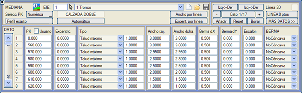
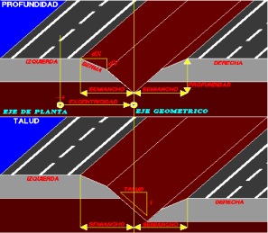
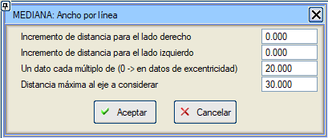
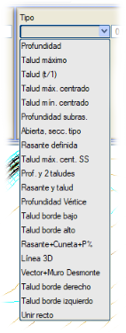
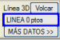
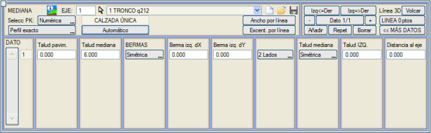

Genel Bilgiler
Bu
menüde otoyolların veya bölünmüş yolların refüjü tasarlanır, ancak
aynı zamanda tek platformlu yollarda geometrik eksenin plan eksenine
göre kaydırılması (eksantrisite) için de kullanılır. Tek platformlu yol durumunda, bu menüdeki diğer bilgiler göz ardı edilerek sadece eksantrisite verileri kullanılır.
Yardımcı platformlar ve refüj gibi bazı boykesit tablolarındaki maksimum veri sayısı 10000'e çıkarılmıştır.
Her iki veri arasında KM'ye göre doğrusal enterpolasyon yapılır ve
gerekirse değerler geriye ve ileriye doğru ekstrapole edilir. Sabit
refüj için tek bir veri yeterlidir.
Kullanıcı KM'leri
seçeneği, KM'lerin kullanıcı değerleriyle girilmesine olanak tanır.
Seçenek etkinleştirilebilir/devre dışı bırakılabilir ve etkinleştirme
durumu .vol dosyasında kaydedilir.
[Otomatik] düğmesi, mevcut eksenin başlangıç ve bitiş KM'leri ile iki veri başlatır. Ayrıca, bu [Otomatik] araç,
plan eksenindeki yanal sıçramayı telafi eder. Örnek: Başlangıç
bölümünde ekseni sol platform kenarında ve bitiş bölümünde sağ platform
kenarında olan, 4 metrelik iki platformlu bir yol. 800 metrelik eksen,
325.421 KM'sinde +8 metrelik bir yanal sıçramaya sahiptir. Başlangıç
kilometresinde +4 metrelik bir eksantrisitesi vardır.
[Otomatik]'e basıldığında 4 veri oluşturulur:
KM 0.000 EKS +4.000
KM 325.420 EKS +4.000
KM 325.422 EKS -4.000
KM 800.000 EKS -4.000
Bu menüdeki
KM verileri hem grafiksel hem de sayısal olarak girilebilir
(düğmeler [Tıkla]/[Klavye]).
Grafiksel olarak girilmesi durumunda, noktanın eksen üzerindeki izdüşümü
tam veya enterpole edilmiş bir profile referans verebilir.

Bu tablonun verileri ayrıca .med uzantılı dosyalar aracılığıyla kaydedilebilir  ve yüklenebilir ve yüklenebilir  . .
Geometrik Eksenin Eksantrisitesi
Eksantrisite,
bu menüye girildiğinde görünen modelde de gözlemlenebileceği gibi,
geometrik eksenin (iki platformlu yollarda refüj tepe noktası veya tek
platformlu yollarda platform merkezi) plan eksenine (matematiksel tanım
ekseni) olan mesafesidir ve geometrik eksen plan eksenine göre sağa
kaydırılırsa pozitiftir.
[Çizgiye Göre Eksant.]
düğmesi (çizgiye göre eksantrisite), haritadan grafiksel olarak seçilen
bir çizgiden yola çıkarak eksantrisite tablosunu otomatik olarak
oluşturmaya olanak tanır. Bu seçenek çalıştırıldığında, oluşturulan tüm
KM'ler için ilk veride tanımlanmış olabilecek refüj genişlikleri,
palyeler, derinlik vb. veriler korunur.
Refüj Geometrisinin Tasarımı
GENİŞLİK I ve GENİŞLİK D refüj yarı genişliği, iç banketin iç kenarı ile refüjün tepe noktası arasındaki mesafedir.

Bu değerler, [Çizgiye Göre Genişlik]
seçeneğiyle (çizgiye göre refüj yarı genişlikleri, 8D çizgiler kabul edilir) otomatik olarak verilebilir. Bu seçenek, planda çizilmiş iki çizgiden
refüj yarı genişliklerini belirler. Seçenek, sağ ve sol genişlikler
için çizgileri seçmeyi, her iki tarafa eklenecek/çıkarılacak bir
mesafeyi, dikkate alınacak maksimum bir genişliği, bu değerin her
katında bir veri oluşturmak için bir enkesit aralığını ister ve
eksantrisite değeriyle telafi edilip edilmeyeceğini sorar. Bu veriler
girildikten sonra, program bir genişlik tablosu oluşturur ve diğer
veriler (eksantrisite, refüj tipi ve palye) ilk veriden kopyalanır;
ancak enkesit aralığı 0 olarak girilirse, o zaman [Çizgiye Göre Eksant.]
seçeneğiyle oluşturulan mevcut KM'lerde genişlik değerleri hesaplanır
ve her KM'de zaten var olan diğer veriler (eksantrisite, derinlik,
palyeler vb.) korunur.
Refüj tarafındaki palyeler de genişlik (PALYE dX) ve kot farkı (PALYE dY) ile her iki tarafta simetrik olarak tanımlanır.
Palye bölgesinde, banketle aynı yüksekliğe kadar herhangi bir üstyapı tabakası uzanmadığında, Basamak değeri tanımlanabilir.
Ayrıca palye şu şekilde olabilir:
- İçbükey: dx ve dy değerleri her zaman korunur.
- İçbükey Olmayan: Eğer banketin deveri dy/dx'i aşarsa, palyenin eğimi banketin devamı şeklinde ayarlanır ve sadece dx genişliği korunur.
- Simetrik: İçbükey Olmayan gibidir,
ancak iç banketin deveri nedeniyle bir taraftaki palyenin eğimi
arttığında, diğer taraftaki palyeye de aynı eğim atanır.
Örnek: %7 dever ve %4 palye eğimi
Tip
|
Sol Platform
|
Sol Palye
|
Sağ Palye
|
Sağ Platform
|
İçbükey
İçbükey Olmayan
Simetrik
|
7%
7%
7%
|
4%
7%
7%
|
4%
4%
7%
|
7%
7%
7%
|
Refüj Geometrisi Tipleri
Refüj
geometrisini tanımlama parametrelerine gelince, program Tip açılır listesinden erişilebilen aşağıdaki olanakları sunar:
- Derinliğe Göre:
İki iç banketin iç kenarından (eğer farklı iseler) en düşük kotlu
olandan ölçülür ve negatif olabilir. Sıfır derinlikli refüjlerde, iki
noktayı birleştirmeye karşılık gelen kot atanır.
- Maksimum Şeve Göre:
Her iki taraftan, palyenin iç kenarından verilen şevle çizilir ve
refüjün tepe noktası, bu iki çizginin kesiştiği noktada kalır, bu nokta
geometrik merkezle çakışmasa bile. Eğer kot farkı nedeniyle bu çizgiler
kesişmezse, iki palye kenarı doğrudan karşılık gelen şevle (tanımlanandan
daha az olacaktır) birleştirilir.
Bu tanım tipi için sol tarafa farklı bir şev tanımlamak mümkündür.
Bunun için, [DAHA FAZLA VERİ
>>] düğmesine bastıktan sonra, refüj şevinin asimetrik olduğunu belirtmek ve
sol şev değerini girmek yeterlidir.
-
Şeve Göre (ondalık olarak): Önceki durumla aynıdır, ancak eğer kot farkı nedeniyle bu çizgiler kesişmezse, en yüksek olanı tanımlanan şevle en düşük palyenin dikeyine kadar çizilir ve o noktadan dikey olarak aşağı inilir.
Önceki durumda olduğu gibi, bu tanım tipi için de sol tarafa farklı bir
şev tanımlamak mümkündür. Bunun için, [DAHA FAZLA VERİ >>] düğmesine bastıktan sonra,
refüj şevinin asimetrik olduğunu belirtmek ve sol şev değerini girmek yeterlidir.
-
Merkezlenmiş Maksimum Şeve Göre: Refüjün tepe noktası geometrik
merkezle çakışır ve eğer palyeler farklı seviyelerde biterse, en düşük
olandan refüj tanımlanan şeve sahip olacak ve en yüksek olandan daha
küçük (daha dik) bir şeve sahip olacaktır.
- Merkezlenmiş Minimum Şeve Göre: Önceki durumun tamamlayıcısı olarak,
refüjün tepe noktası geometrik merkezle çakışır ve eğer palyeler
farklı seviyelerde biterse, en yüksek olandan refüj tanımlanan şeve
sahip olacak ve en düşük olandan daha büyük (daha yatay) bir şeve sahip
olacaktır.
- Terasman ile kesişimden derinliğe göre: Program, en düşük terasman ile kesişimden
refüjün tepe noktasına kadar istenen derinliğin oluşması için eğimi
hesaplar.
-
Tip kesit uygulamalı açık refüj: Bu durumda refüjde
uygulanacak bir tip kesit tanımlanır. O zaman, iç banketin kenarından
itibaren refüj oluşturmak yerine, tanımlanan yarma/dolgu kesiti
analiz edilir. Sağ platformun iç kenarı için sol tarafın kesiti ve sol
platformun iç kenarı için sağ tarafın kesiti uygulanır. Eğer iki iç
kesit kesişirse, o ortak noktada kesilirler. Açık refüjde, refüj
palyesi yerine ilgili yarma/dolgu kesitinin palyesi uygulanır.
Refüjde
uygulanacak tip kesit, dış kenarlar için tanımlananlardan herhangi
biri veya refüj için özel olarak oluşturulmuş farklı bir kesit
olabilir.
Açık bir refüj tanımı, karma kesitlerde zorunludur: açık-tünel,
açık-sanat yapısı, açık-aç-kapa tünel, aç-kapa tünel-aç-kapa tünel,
aç-kapa tünel-tünel, vb.
-
Tanımlanmış bir kırmızı kota göre: KIRMIZI KOT menüsünde
refüj için tanımlanan boykesitin kotunu alan merkezlenmiş bir
refüjdür.
- Seçilmiş malzemeden merkezlenmiş maksimum şeve göre: Bu refüj şu şekilde oluşturulur:
- İç banketin veya refüj palyesinin kenarından, bir TP şeviyle (DOLGU PALYESİ menüsünde tanımlanır) inilir.
- Bu şevle, seçilmiş malzeme çizgisine veya eğer seçilmiş malzeme yoksa terasman çizgisine kadar inilir.
- Bu noktadan, refüj menüsünde tanımlanan şevle geometrik eksene kadar inilir.
- En düşük kotu veren tarafta bu şev korunur ve diğer tarafta şev, refüjün tepe noktasının çakışması için değiştirilir.
Bu tür bir refüj tanımlandığında, refüj tarafında bir kaplama şevi tanımlanabilir. Bunun için,
[DAHA FAZLA VERİ >>] düğmesine basılır ve kaplama şevi belirtilir. Bu değer
0 bırakılırsa, dolgu kesitindeki TP değeri alınır.
- Dever ekseninden derinliğe ve iki şeve göre:
Bu refüj geometrik eksende merkezlenir. Refüjün tepe noktasının kotu,
en düşük kırmızı kotun kotundan derinlik olarak ölçülür ve [DAHA FAZLA VERİ>>] ekranından iki şev tanımlanır: biri kaplamanın iç kapanışı için ve diğeri refüj için. Bu
tür bir refüj şu şekilde oluşturulur:
- Refüjün tepe noktasından, iç banket kenarından
uygulanan kaplamanın iç kapanış şeviyle kesişene kadar tanımlanan şev
çizilir. Bu kesişim, terasmanın üstünde veya altında olabilir.
-
Terasman, banket kenarından
kaplamanın iç kapanış şeviyle teorik kesişimine kadar uzatılır ve
daha sonra bu noktanın sağ tarafı ile sol tarafı doğrudan birleştirilir.
- Eğer bu segmentin herhangi bir kısmı refüjün üzerindeyse, refüjden geçirilir.
- Tanımlanmış bir kırmızı kot ve bir şeve göre: Refüj
tabanı, KIRMIZI KOT menüsünde oluşturulan özel bir boykesit ile
tanımlanır ve genişlikler yerine refüj şevlerinin değeri belirtilir ve
bu şevle palye veya iç banket kenarının kotuna ulaşana kadar
yükselinir.
- Tepe noktasındaki derinliğe göre.
Bu tipte, refüjün tepe noktasının derinliği, iç banket veya palye
kenarlarını birleştiren çizgiden ve tepe noktasının dikeyinden
ölçülür.
- Alçak kenardan sabit şevle: En düşük kottaki kenardan, geometrik eksene kadar belirli bir şev çizilir ve sonra yüksek kenarla birleştirilir.
- Yüksek kenardan sabit şevle: En yüksek kottaki kenardan, geometrik eksene kadar belirli bir şev çizilir ve sonra alçak kenarla birleştirilir.
- Kırmızı Kot + Hendek + P%: Refüj tabanı, boykesitinden tanımlanan kotu alır. Geometrik eksenden ve boykesitin kotundan vektörel refüj hendeği oluşturulur.
Vektörün son segmenti, refüj palyesinin kenarından çıkan ve bitişik
kutucukta verilen bir P% eğimine sahip çizgiyle kesişene kadar uzatılır
veya kısaltılır.
Vektörel refüj, her iki tarafta tek bir
yatay segment olabilir. Bu durumda, P% eğimiyle inen palye, refüjün
kırmızı kotuna ulaşana kadar iner ve tabandaki yatay segmenti uzatır
veya kısaltır.
- 3B Çizgi:
Bu çizgi, refüjün tepe noktasının plan konumunu ve kotunu tanımlar,
ancak iki iç palye (kod -50 veya palye yoksa -11) arasında bulunması
şartıyla.
- Vektör + Yarma Duvarı:
Bu durum, bir kırmızı kotun diğerinden daha yüksek olduğu otoyollarda
ortaya çıkabilir. Yüksek tarafa, belirtilen tip kesitin yarma duvarı
yerleştirilir (öncesinde sabit refüj olabilir). Alçak tarafa, duvarla kesişene kadar sabit refüj yerleştirilir ve bu noktadan duvarın derinliği ölçülür.
- Sağ kenar şevi, Sol kenar şevi:
Her iki durumda da, seçilen kenardan geometrik eksene kadar tanımlanan
şev çizilir ve diğer kenarla bu noktadan doğrudan birleştirilir.
- Düz Birleştir: Her
iki tarafın son iç noktalarını (banket kenarı, palye kenarı veya
vektörel refüj kenarı olabilir) birleştirerek aralarında tek bir düzlem
bırakır.
Ayrıca, refüj geometrisi sabit refüj ve refüj hendeği vektörleriyle tamamlanabilir.
Eksene Mesafeye Göre Verilen Refüj Tepe Noktası
Aşağıdaki refüj tipleri için:
- Derinliğe Göre
- Merkezlenmiş Maksimum Şeve Göre
- Merkezlenmiş Minimum Şeve Göre
- Terasman ile kesişimden derinliğe göre
- Tanımlanmış bir kırmızı kota göre
- Tanımlanmış bir kırmızı kot ve bir şeve göre
- Tepe noktasındaki derinliğe göre
- Alçak kenardan sabit şevle
- Yüksek kenardan sabit şevle
([DAHA FAZLA VERİ>>] sekmesinde) refüjün tepe noktasını konumlandırmak için geometrik eksene bir mesafe tanımlama imkanı vardır.
Asimetrik Palyeler ve Enkesitin Kırpılması
[DAHA FAZLA VERİ >>] düğmesine basıldığında diğer seçenekler (bazıları zaten açıklanmıştır) gösterilir:

Her iki taraf için farklı bir refüj palyesi
tanımlanabilir. Bunun için, palyelerin asimetrik olduğunu belirtmek ve hem sağ palye hem de sol palye için dX ve dY değerlerini girmek yeterlidir.
Bu diyalog kutusu ayrıca enkesiti kırmaya olanak tanıyan bir sütun sunar:
- 2 Taraf: Enkesitin her iki tarafı da oluşturulur (kırpma yapmaz).
- Sağı İptal Et: Enkesitin sağ tarafını iptal eder.
- Solu İptal Et: Enkesitin sol tarafını iptal eder.
- 2'sini İptal Et: Enkesiti tamamen iptal eder.
[Sağı İptal Et] veya [Solu İptal Et]
seçenekleri otoyollar veya çift hatlı demiryolları için
kullanıldığında, oluşturulan enkesiti içten tamamlamak için bir açık
refüj veya hat arası tip kesiti kullanılabilir.
|